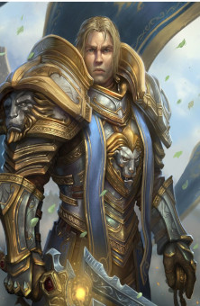
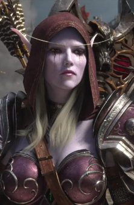
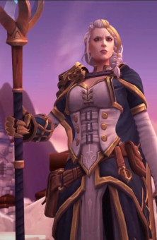
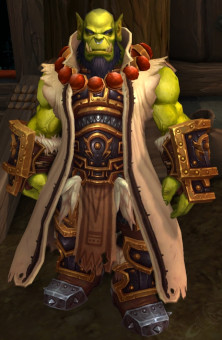

ANDUIN WRYNN

Anduin Llane Wrynn es el Rey de Ventormenta, Alto Rey de la Alianza y comandante de todas las fuerzas de la Alianza después de la muerte de su padre, Varian Wrynn. Después del secuestro del Rey Varian cuando Anduin era solo un niño, fue nombrado Rey de Ventormenta bajo la regencia de Bolvar Fordragón hasta que Varian regresó. Años más tarde, asumió el trono de forma permanente tras la muerte de su padre en la Batalla por la Costa Abrupta durante la tercera invasión de la Legión Ardiente.
En contraste con su padre un reconocido guerrero, Anduin es contemplativo y diplomático, así como un sacerdote de la Iglesia de la Luz Sagrada. Se asemeja a su "tía" Jaina antes de la Caída de Theramore, Anduin buscó una manera pacífica para poner fin al conflicto entre la Alianza y la Horda. En sus esfuerzos, se ha hecho amigo de varias figuras poderosas fuera de la Alianza, incluyendo Baine Pezuña de Sangre, los Augustos Celestiales y Wrathion.
Su nombre proviene de dos figuras veneradas de la historia de Ventormenta: su abuelo el Rey Llane Wrynn y el legendario Anduin Lothar. A partir de Legion, Anduin tiene 17 años.
SYLVANAS BRISAVELOZ

Lady Sylvanas Brisaveloz (Sylvanas Windrunner en Warcraft III), titulada a veces también como "la Dama Oscura" o como "la Reina alma en pena", es la líder suprema de los Renegados, una de las facciones más poderosas de no-muertos en Azeroth. En vida, Sylvanas fue la General Forestal de Lunargenta, cuyo liderazgo y proezas marciales fueron sin igual. Durante la Tercera Guerra, defendió con valentía Quel'Thalas de una invasión de la Plaga dirigida por el caballero de la muerte Arthas Menethil. Al final, sin embargo, Sylvanas cayó en batalla. En lugar de honrar a la General Forestal con una muerte rápida, Arthas arrancó su alma y la transformó en una alma en pena: una agente astuta y vengadora del Rey Exánime, apoderada por el odio.
Cuando se debilitó el control del Rey Exánime sobre sus secuaces, Sylvanas se separó del control de su amo tiránico y recuperó su cuerpo. Con la promesa de vengar su muerte, Sylvanas reunió a otros no-muertos renegados y se dispuso a emprender una guerra contra la Plaga. Fue así como se formó el grupo conocido como los Renegados, con Sylvanas como su reina. Bajo el mando de Sylvanas, los Renegados se unieron a la Horda y más tarde ayudaron a provocar la caída del Rey Exánime en las heladas tierras de Rasganorte.
Sin embargo, todavía quedaban muchos problemas por delante. Tras un levantamiento dentro de sus filas que mató a otros miembros de la Horda, la reina alma en pena se ha ganado la desconfianza entre muchos de sus aliados. Más recientemente, Sylvanas comenzó a fortificar su territorio dentro de los Claros de Tirisfal con el fin de establecer un reino adecuado para sus seguidores. Mientras Sylvanas mantiene que su lealtad a la Horda no ha disminuido, algunos de los miembros de la facción no están seguro acerca de sus verdaderas intenciones.
JAINA VALIENTE

Jaina Valiente (Jaina Proudmoore en Warcraft III) es la hechicera humana viva más poderosa de la actualidad [4]. Pertenece al linaje de la Casa Valiente cuyos progenitores Daelin y Katherine han servido como gobernantes del reino humano de Kul Tiras. Hasta su reciente regreso a su hogar, ostentó importantes cargos como líder del Kirin Tor y gobernante de Theramore y de Dalaran.
Jaina fue una de las más talentosas y destacadas hechiceras de Dalaran, a las órdenes del gran archimago Antonidas que la envió al comienzo de la Tercera Guerra al reino de Lordaeron con el fin de descubrir qué ocurría tras unas revueltas campesinas. Mientras cumplía su misión, fue escoltada por su amigo de la infancia, el Príncipe Arthas Menethil, con quien tuvo una relación amorosa. Jaina recibió la visita de un misterioso profeta, que le enseñó el futuro, una visión donde se mostraba la caída de Lordaeron, y aceptó ir a Kalimdor para tratar de evitar la catástrofe con el máximo número de efectivos posible.
Jaina juró acabar con la Legión Ardiente y sus oscuros agentes. Uniendo fuerzas con los elfos de la noche e incluso con la Horda orca, Jaina ayudó a derrotar al demonio Archimonde y a desterrar a la Legión. Entonces reunió a los humanos supervivientes de Kalimdor y fundó la ciudad portuaria de Theramore. Desde ahí gobierna y espera reunir a los distantes reinos humanos una vez más.
THRALL

Thrall, (llamado Go'el al nacer) hijo de Durotan, es el antiguo Jefe de Guerra de la restaurada Horda chamanística y fundador de la nación de Durotar en Kalimdor. Tras la caída del Rey Exánime y la creciente invasión elemental que culminó en el Cataclismo, Thrall dejó el puesto de líder de la Horda y se unió al Anillo de la Tierra para combatir con los furiosos elementales.
Es uno de los personajes más importantes del universo Warcraft, siendo fundamental en grandes eventos que moldearon la historia en Azeroth.